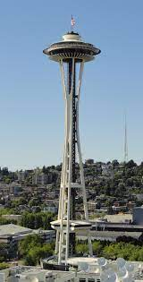
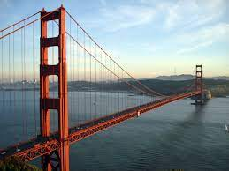
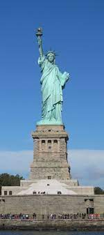

Seattle is a vibrant city nestled between the picturesque Puget Sound and the majestic Cascade Mountains, known for its thriving tech industry and iconic Space Needle landmark. The city's diverse neighborhoods, coffee culture, and frequent rain showers add to its unique charm.
San Francisco is a hilly and eclectic city located on the tip of the San Francisco Peninsula, renowned for its iconic Golden Gate Bridge and historic cable cars. The city is celebrated for its progressive culture, diverse communities, and the bustling tech scene of Silicon Valley nearby.
New York City, often referred to as the "Big Apple," is a bustling metropolis on the eastern coast of the United States, known for its iconic landmarks such as the Statue of Liberty, Times Square, and Central Park. As a global cultural and financial hub, it offers a fast-paced lifestyle, remarkable diversity, and endless opportunities for entertainment, making it a city that never sleeps.
